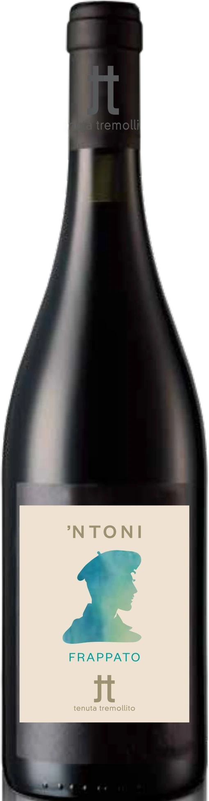

Tenuta Tremollito
’NTONI
Frappato · IGT Terre Siciliane
Prende il nome da Padron ’Ntoni, capofamiglia de I Malavoglia di Verga (1881): una storia di famiglia, lavoro e tradizione che resistono alle avversità.
Il Frappato è di casa a Vittoria, nella Sicilia sud-orientale. Una lettera del commendatore Rosario Cancellieri al barone Mendola, nel 1879, lo documenta già nel Seicento.

Scheda tecnica: ’NTONI
Frappato
Colore rosso rubino. Odore fruttato, floreale. Sapore secco, piacevole acidità, tannico con buona persistenza aromatica.
- Vitigno
- Frappato
- Zona di produzione
- Monte Altore, Vizzini (CT)
- Altitudine
- Tra 500 e 600 m s.l.m.
- Tipo di suolo
- Sabbioso, vulcanico, ricco di minerali, a reazione subacida
- Clima
- Di montagna e alta collina, con notevole ventilazione e forti sbalzi termici tra il giorno e la notte
- Sistema di allevamento
- Viti allevate a spalliera
- Età dei vigneti
- Dai 10 ai 15 anni
- Densità d’impianto
- Circa 5.500 ceppi per ettaro
- Resa per ettaro
- 7.000 kg/ha
- Maturazione e vendemmia
- A ottobre, a seconda delle condizioni climatiche, con raccolta manuale
- Vinificazione
- Le uve vengono diraspate e pigiate e vinificate a temperatura controllata. Fermentazione alcolica in acciaio, con macerazione di media durata
- Affinamento
- In barriques per circa 3 mesi e in bottiglia per circa 6 mesi
- Gradazione alcolica
- 13,5%
- Temperatura di servizio
- 16°C
IGT Terre Siciliane
Etichetta elettronica · Ingredienti e valori nutrizionali
Le informazioni obbligatorie in etichetta secondo il Regolamento UE 2021/2117. Nessun contenuto promozionale in questa parte della pagina.
| Ingredienti | In arrivo dall’enologo |
|---|---|
| Allergeni | In arrivo (contiene solfiti) |
| Energia per 100 ml | — kJ / — kcal |
| Carboidrati per 100 ml | — g, di cui zuccheri — g |
| Alcol | 13,5% |
| Imballaggio e smaltimento | In arrivo |